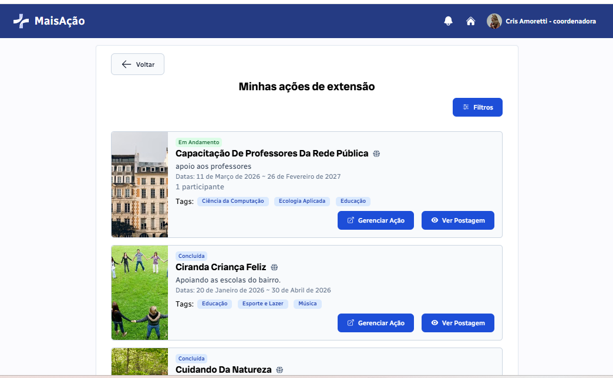
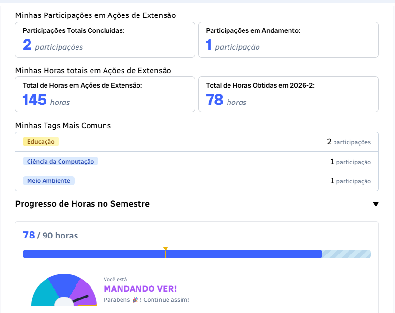
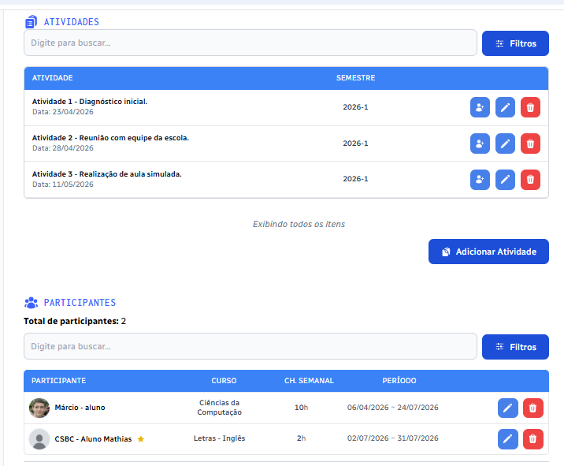
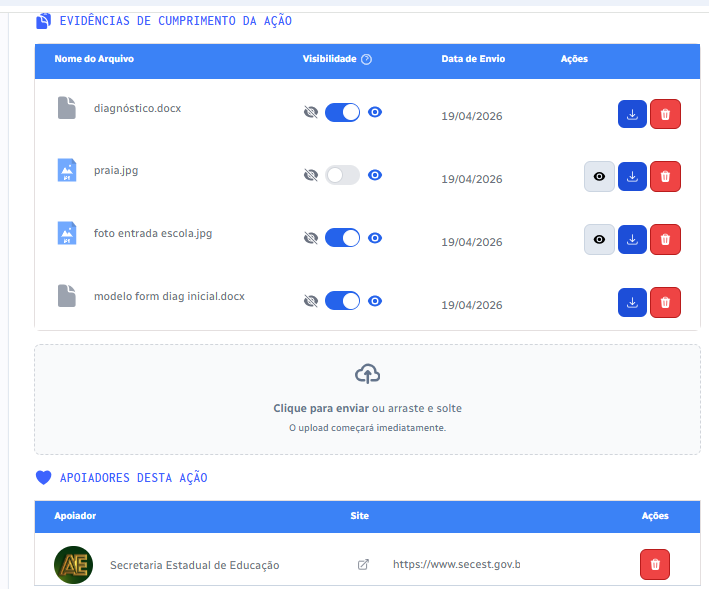

MaisAção: tecnologia para a extensão no ensino superior
Plataforma para gestão e inserção curricular da extensão no ensino superior. Apoia as instituições no planejamento, acompanhamento e comprovação das ações de extensão, com transparência, agilidade e engajamento.

Marco regulatório & processos
Da Resolução CNE/CES nº 7/2018 ao acompanhamento institucional
Os cursos de graduação devem destinar ao menos 10% da carga horária a ações de extensão. O MaisAção reúne todas as etapas desse fluxo em um único ambiente digital:
- Demanda da sociedade
- Ação de extensão
- Participação estudantil
- Horas & evidências
- Gestão institucional
- Indicadores & comprovação
Interface & usabilidade
Gestão, participantes, evidências e engajamento
Projetada para coordenadores, docentes, estudantes e gestores institucionais. O fluxo reúne registro ágil, organização da participação comunitária, envio de evidências e gamificação.




Vídeos
Apresentação e tutoriais da plataforma
Assista à apresentação e conheça na prática o funcionamento do MaisAção.


Tecnologia e registro
Tecnologia desenvolvida em parceria e com registro no INPI
O MaisAção foi desenvolvido no âmbito de projeto de PD&I da RNP, em parceria com instituições acadêmicas, e possui registro de programa de computador no Instituto Nacional da Propriedade Industrial (INPI).
Comercialização
Comercialização autorizada conforme documentação de exclusividade apresentada pela Performatec.